Mercenary Request: Fishing Spree
After completing Liberation of Eria - Chapter 2, you will be able to go to Saki. There, at the Fishermen's Guild, the Guildmaster has a Mercenary Request for you.
Starting the Request
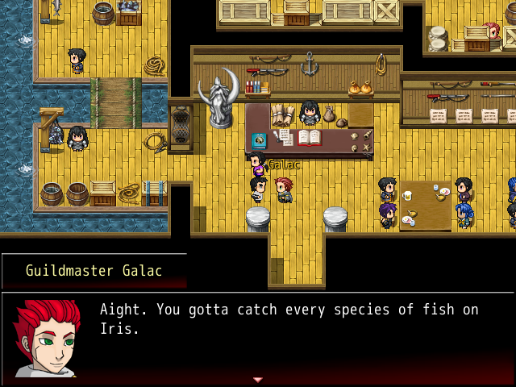Guildmaster Galac of the Fishermen's Guild wants you to catch and bring back every species of fish on Iris. There are ten in total, not including the rare Shining Fish.
Hint: Read the book on the counter.
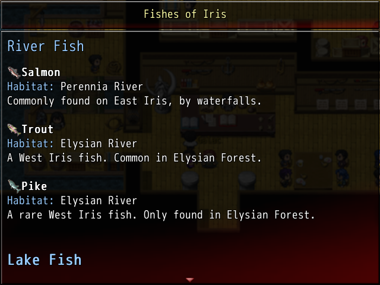The book on the counter has the general locations of each fish.
Solutions and Explanations
Stop scrolling at this point if you would like to complete the quest on your own!
This guide will show some easy to access locations to find each fish. They can be found in other places as well, but these are locations that you are able to access the moment you accept the request.
Salmon
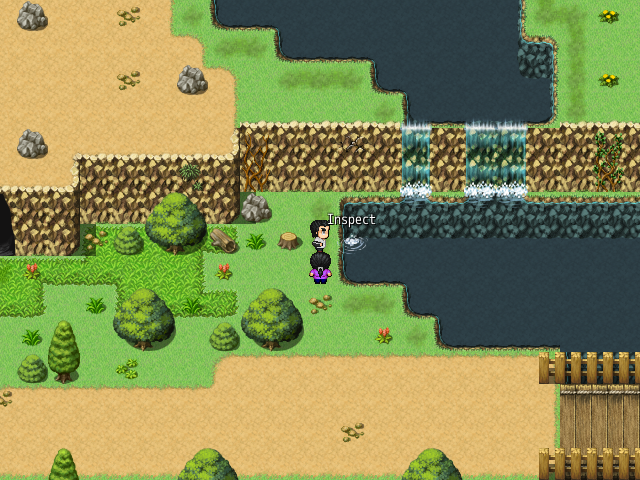Location: Canowi Road
You'll find Salmon in the areas around Canowi.
Trout
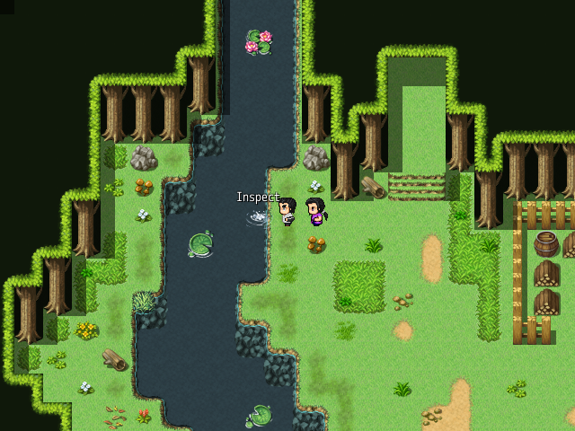Location: Elysian Forest
This area is right next to Ne'l's House.
Pike
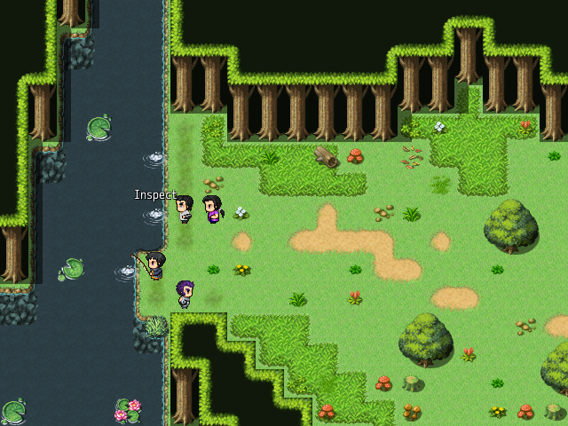Location: Elysian Forest
Take the southern path in Elysian Forest and you will end up by a river.
Bass
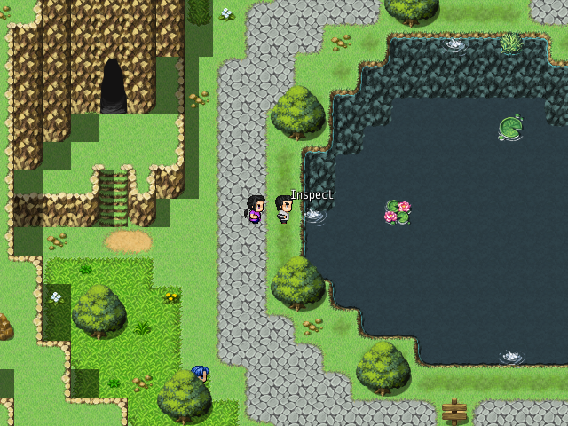Location: Eria Road
The lake here contains Bass.
Cod
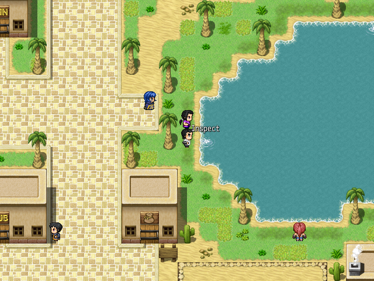Location: Solem
This is the only place to fish Cod.
Tuna, Mackerel, Herring
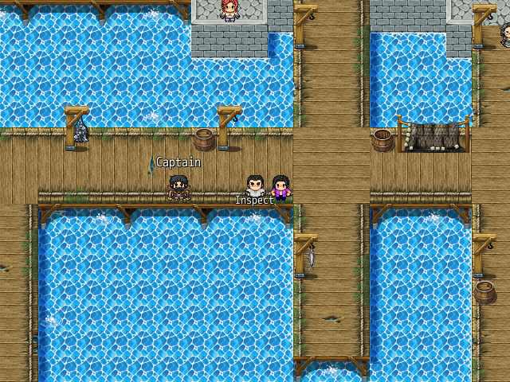Location: Saki
The Ocean Triple can be found in Saki. The fish on the platforms are random (33% to find a particular fish).
Moray Eel
| 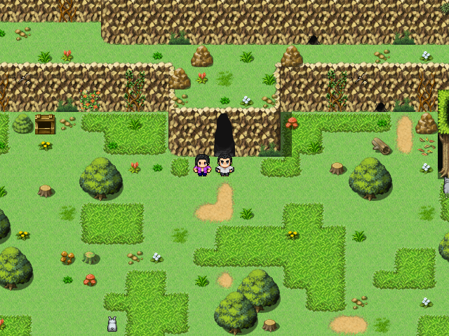 | 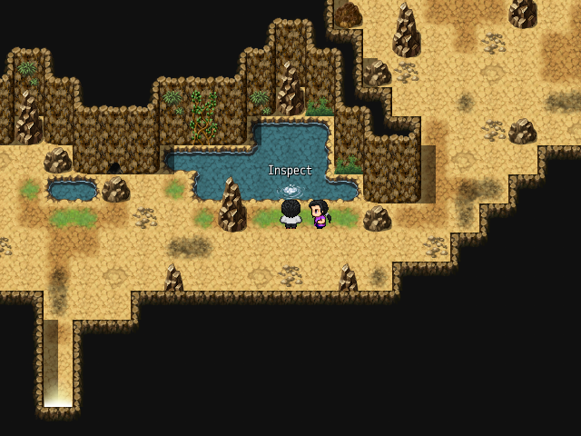 |
Location: Elysian Forest
Take the northern path and break the wall with the Vector Crusher. Inside you'll find Moray Eels.
Cavefish
| 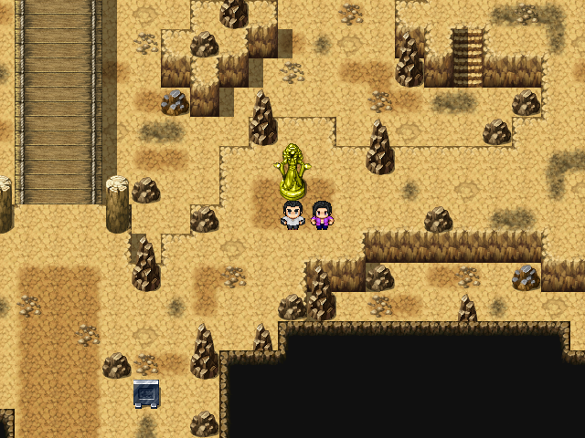 | 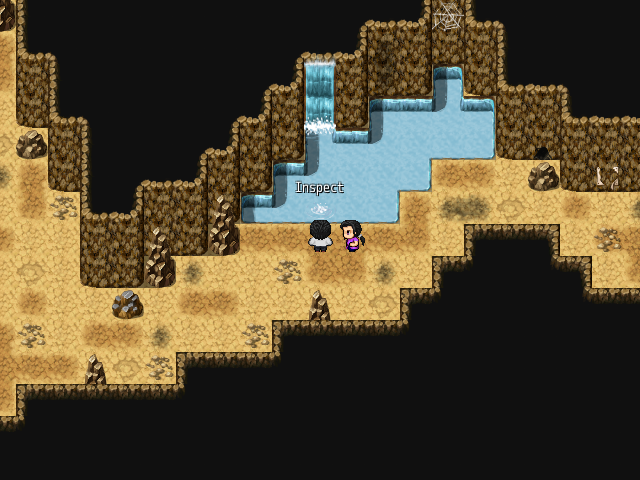 |
Location: Iris Caverns
Head to the Iris Mountain Pass and go down to Iris Caverns. There you'll find Cavefish.